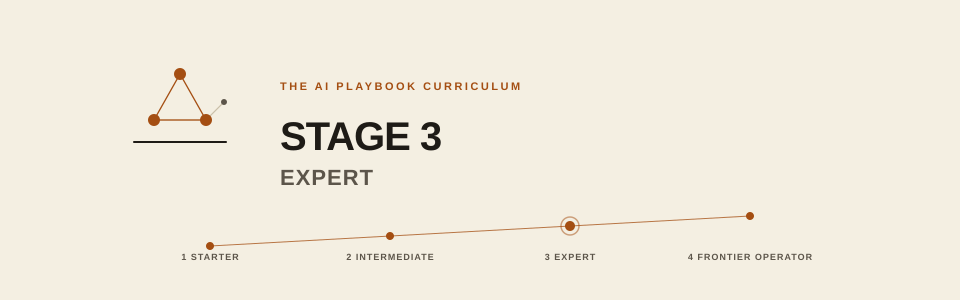

3-expert/README.md
Stage 3 Expert
You are: a builder. You will become: a practitioner: shipping AI to real users with SLOs, handling incidents, drift, adversarial inputs, and cost at scale; then leading an AI team, doing custom model training, applied alignment, safety engineering, red-teaming. Comfortable with training-stack internals. The Curriculum's pace: 10 to 18 months.

Prerequisites
- Stage 2 exit criteria met
- Have shipped software to real users before (not necessarily AI)
- Comfortable with observability tools (metrics, traces, logs)
- Access to a production environment or willingness to build one
- Later in the stage: access to compute for training runs (cloud GPUs at minimum) and willingness to read papers
Exit criteria
- You've shipped an AI product or feature to real users with SLOs met
- You've orchestrated a multi-agent workflow in production
- You've handled a real drift or incident (or run a realistic dry-run)
- You've done a model bake-off with a data-driven decision
- You've hardened one workflow against adversarial input
- You've fine-tuned a model with measurable impact
- You've led a red-team exercise
- You understand training-stack internals (attention, MoE, quantization, inference optimization)
- You can teach any concept from Stages 1 to 3 clearly
- You can lead an AI team or an AI initiative
- For companies: full observability, incident response tested, cross-department scaling underway; applied research team stood up, safety program mature, cross-industry benchmarking
Tracks
individual/: 26 modules, 01 to 14 for production systems design, 15 to 26 for the practitionercompany/: 18 modules, 01 to 10 for AI operations at organizational scale, 11 to 18 for mature AI organizationsshared/: production checklist and templates; training, safety, and card templateseli10/: plain-language companions
How to work Stage 3
Stage 3 is about shipping, then leading. Every module ends with "did you ship the thing?" Not "did you read about it."
- Pick one Stage 2 project and take it to production (
01,06) - Add observability and SLOs before customers touch it
- Run a bake-off before you commit to a model (
08) - Red-team it (
05) - Write the incident playbook before you need it (
04) - Deepen training-stack understanding (
16): you cannot lead what you do not understand - Do a real fine-tuning project (
17) - Build safety engineering discipline (
19,20) - Master evaluation (
21) - Teach the material (
25): teaching forces mastery - Everything else is depth on the specialty you are pursuing
If you finish this stage, you can lead an AI product, platform, team, or initiative.
Formerly Level 3 Advanced and Level 4 Professional.